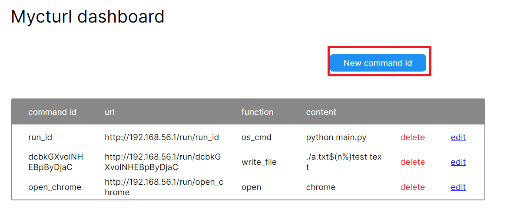
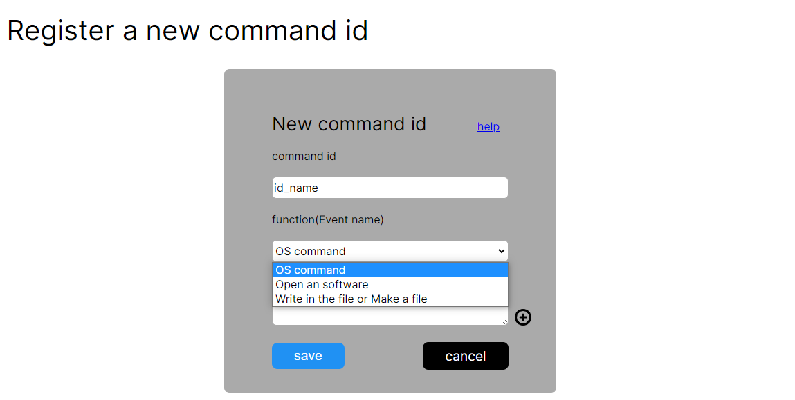
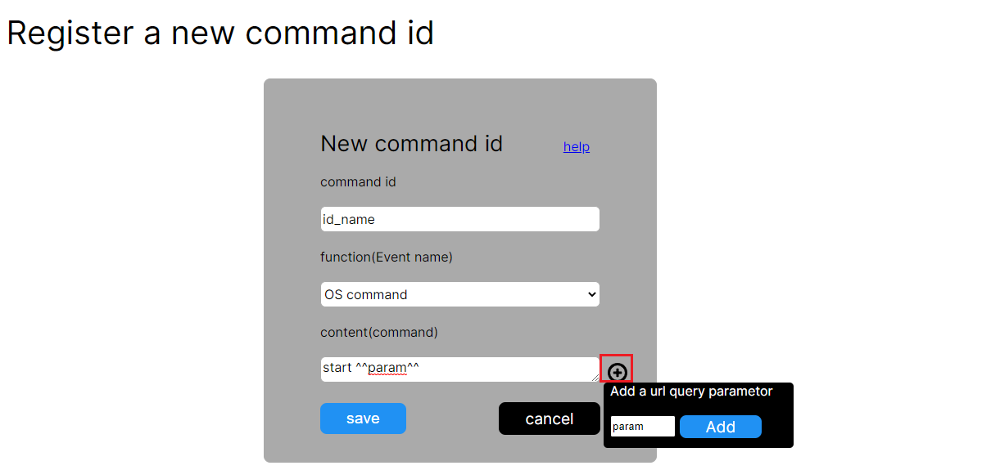
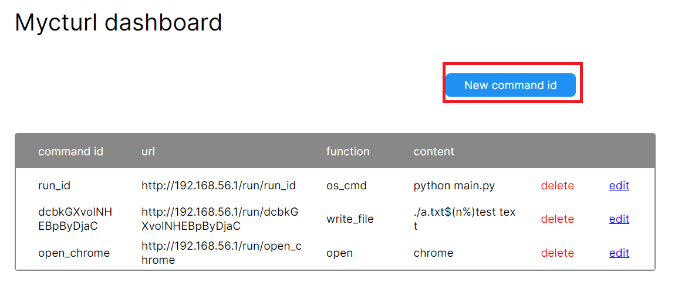
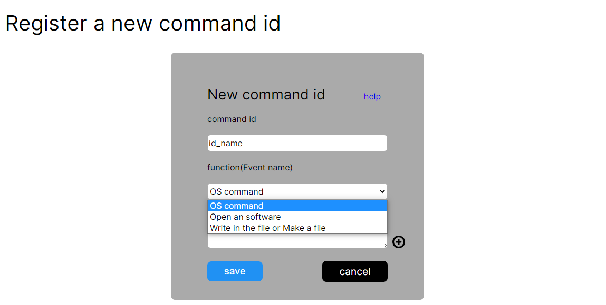
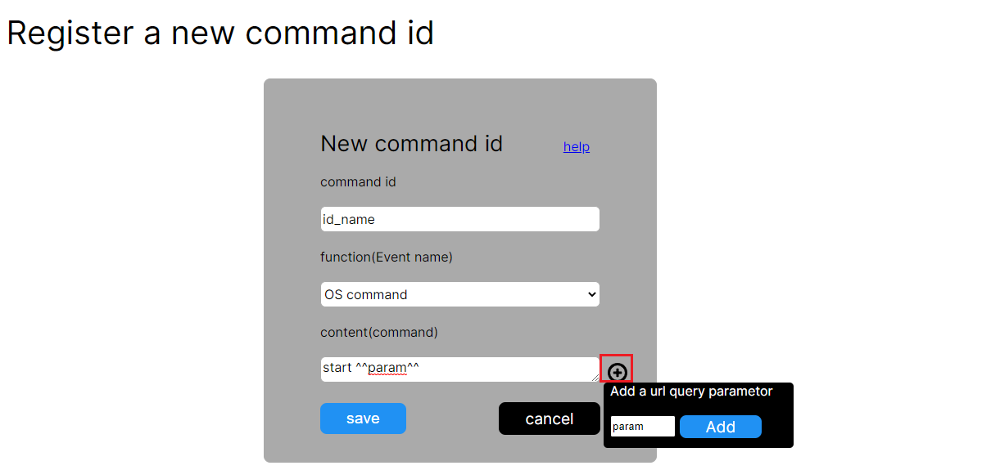

Usage
コマンドを登録
コマンドを登録することによって他のコンピューターからurlにアクセスすることによって
あなたのコンピューターを操作することができます。
1.[New command]をクリックします

2.command idを入力して、functionを選択します。
3.contentに実行したいコマンドの内容などを入力します。
このidを他人に知られるとコンピューターを操作される可能性があるので他人におしえることはあまりおすすめしません。

URLクエリパラメーターを追加
クエリパラメーターを追加することによって、その部分にパラメーターの値を入れることができます。
＋ボタンを押して、パラメーター名を入力し、[Add]を押します。

編集 or 削除
editボタンを押すと編集ページに移動し、deleteボタンを押すとコマンドが削除されます。
How to use function.
OS command
実行したいコマンドを入力します。例:
open
ソフトウェアを開きます 例:
ファイルに書き込んだり、作成したりします
コマンドを登録
コマンドを登録することによって他のコンピューターからurlにアクセスすることによって
あなたのコンピューターを操作することができます。
1.[New command]をクリックします

2.command idを入力して、functionを選択します。
3.contentに実行したいコマンドの内容などを入力します。
このidを他人に知られるとコンピューターを操作される可能性があるので他人におしえることはあまりおすすめしません。

URLクエリパラメーターを追加
クエリパラメーターを追加することによって、その部分にパラメーターの値を入れることができます。
＋ボタンを押して、パラメーター名を入力し、[Add]を押します。

編集 or 削除
editボタンを押すと編集ページに移動し、deleteボタンを押すとコマンドが削除されます。
How to use function.
OS command
実行したいコマンドを入力します。例:
dir
open
ソフトウェアを開きます 例:
chrome
Write in the fileファイルに書き込んだり、作成したりします
filename
text
例:
./a.txt
test text
Download